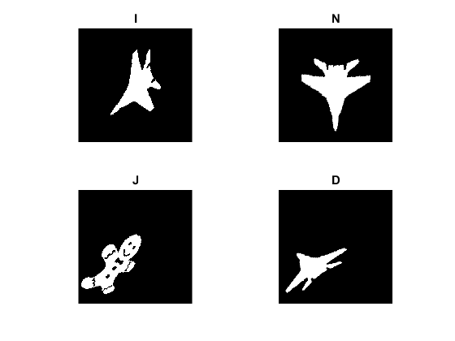

Pei&Lin Normalization
This program demonstrates Pei-Lin Normalization.
Sources:
Source images
fname1 = fullfile(mexopencv.root(), 'test', 'peilin_plane.png'); fname2 = fullfile(mexopencv.root(), 'test', 'peilin_shape.png'); if exist(fname1, 'file') ~= 2 disp('Downloading Image...') url = 'https://cdn.rawgit.com/opencv/opencv_contrib/3.3.1/modules/ximgproc/samples/peilin_plane.png'; urlwrite(url, fname1); end if exist(fname2, 'file') ~= 2 disp('Downloading Image...') url = 'https://cdn.rawgit.com/opencv/opencv_contrib/3.3.1/modules/ximgproc/samples/peilin_shape.png'; urlwrite(url, fname2); end
Load images
I = cv.imread(fname1, 'Grayscale',true); J = cv.imread(fname2, 'Grayscale',true);
Apply normalization
N = cv.warpAffine(I, cv.PeiLinNormalization(I));
D = cv.warpAffine(I, cv.PeiLinNormalization(J), 'WarpInverse',true);Show results
subplot(221), imshow(I), title('I') subplot(222), imshow(N), title('N') subplot(223), imshow(J), title('J') subplot(224), imshow(D), title('D')